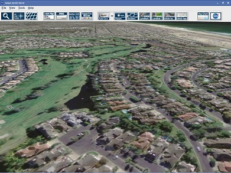

Next: Overview Up: Special Classes Previous: Special Classes Contents
Java applets were small applications written in the Java programming language, or another programming language that compiles to Java bytecode, and delivered to users in the form of Java bytecode. The user launched the Java applet from a web page, and the applet was then executed within a Java virtual machine (JVM) in a process separate from the web browser itself. A Java applet could appear in a frame of the web page, a new application window, Sun's AppletViewer, or a stand-alone tool for testing applets.
Java applets were introduced in the first version of the Java language, which was released in 1995. Beginning in 2013, major web browsers began to phase out support for the underlying technology applets used to run, with applets becoming completely unable to be run by 2015–2017. Java applets were deprecated since Java 9 in 2017 and removed from Java SE 11 (18.9), released in September 2018. Java applets were usually written in Java, but other languages such as Jython, JRuby, Pascal, Scala, or Eiffel (via SmartEiffel) could be used as well.
Java applets run at very fast speeds and until 2011, they were many times faster than JavaScript. Unlike JavaScript, Java applets had access to 3D hardware acceleration, making them well-suited for non-trivial, computation-intensive visualizations. As browsers have gained support for hardware-accelerated graphics thanks to the canvas technology (or specifically WebGL in the case of 3D graphics), as well as just-in-time compiled JavaScript, the speed difference has become less noticeable.
Since Java bytecode is cross-platform (or platform independent), Java applets can be executed by browsers (or other clients) for many platforms, including Microsoft Windows, FreeBSD, Unix, macOS and Linux. They cannot be run on modern mobile devices, which do not support Java.
|

|